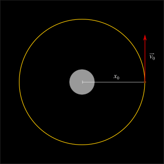

Corpo celeste orbitando um buraco negro
E se, de repente, o Sol se transformasse em um buraco negro?
Para isso, toda sua massa, de 2 $\cdot$ 10$^{30}$ kg (hoje espalhada numa esfera com cerca de 700 mil quilômetros de raio), deveria ser comprimida numa região com raio de cerca de 3 km.
O simulador abaixo nos permite explorar a órbita de corpos (planetas, asteroides ou espaço-naves) que se aventurassem nas vizinhanças de um buraco negro com a mesma massa do Sol.
Nele você pode alterar (ver figura acima):
A posição inicial do corpo: $x_0$ (em km)
O módulo da velocidade inicial do corpo: $v_0$
Ex.: Com $x_0=15$km e $v_0=0.38c$, obtemos uma órbita quase circular. No simulador abaixo, você pode testar esse e outros parâmetros!
Escolha o valor da posição inicial (em km):
Escolha entre 3km e 30km:
3.0
30.0
Escolha o valor da velocidade inicial (em unidades da velocidade da luz):
Escolha entre 0.01 e 1:
0.01
1.00